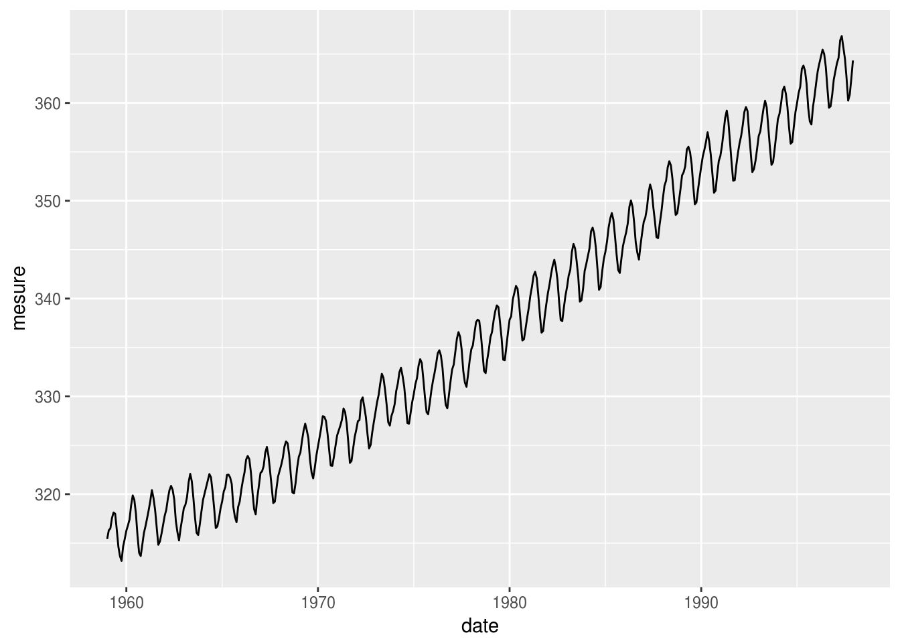
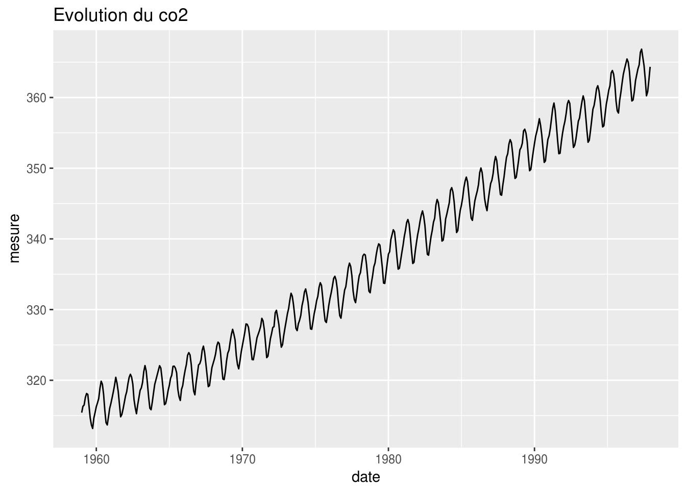
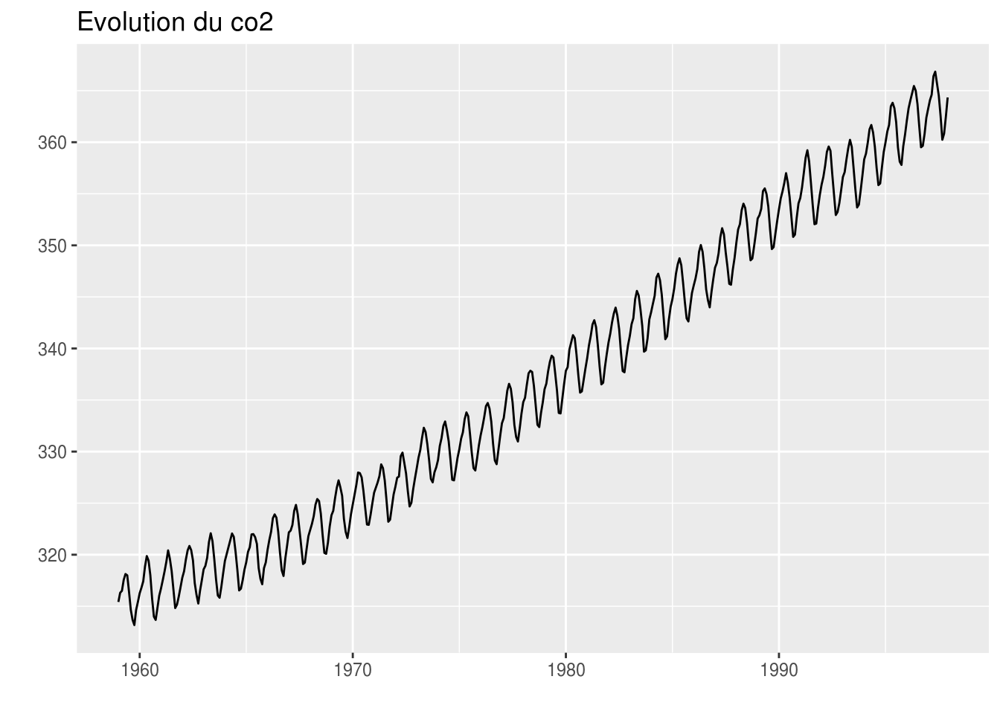
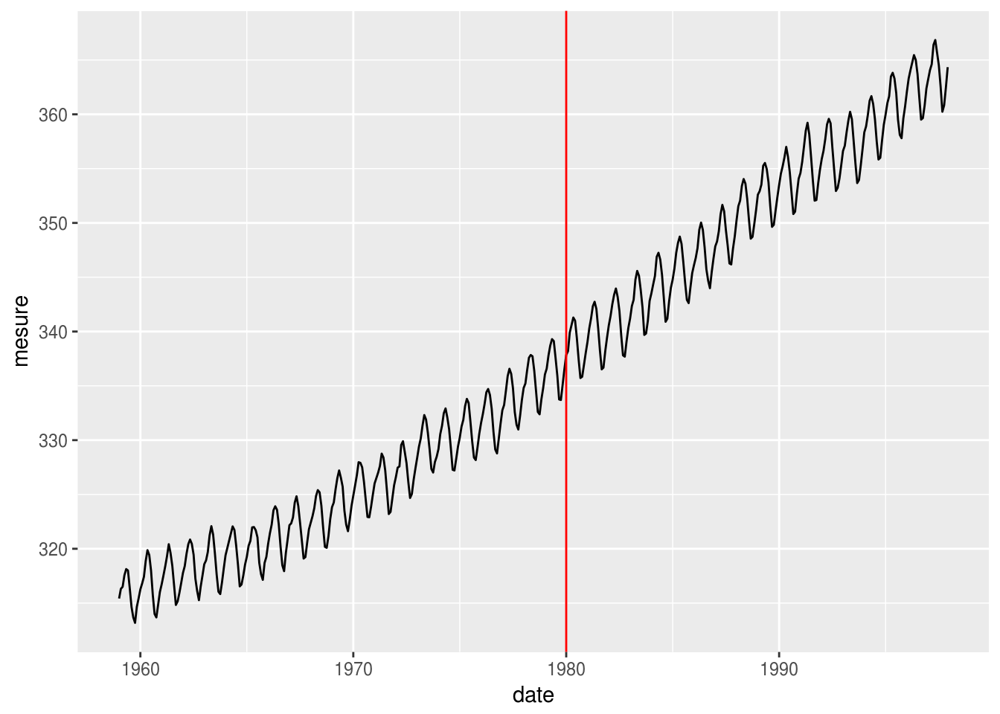

Comme nous l’avons vu dans le précédent TP, nous pouvons donc créer des interactions avec l’utilisation via des inputs. Nous avons vu pour le moment une liste de choix unique, via la fonction selectInput(). Nous allons voir ici d’autres éléments disponibles.
En utilisant le code qui suit, vous verrez le rendu et les sorties générées par tous les inputs vus dans ce TP.
ui.Rlibrary(shiny)
shinyUI(fluidPage(
title = "Test des inputs",
sidebarLayout(
sidebarPanel(
numericInput(inputId = "numeric", label = "numericInput",
value = 2, min = 0, max = 5),
sliderInput(inputId = "slider", label = "sliderInput",
value = 2, min = 0, max = 5),
checkboxInput(inputId = "check", label = "checkboxInput", value = FALSE),
textInput(inputId = "texte", label = "textInput",
value = "texte"),
radioButtons(inputId = "radio", label = "radioButtons",
choices = c("radio 1", "radio 2", "radio 3"),
selected = "radio 2", inline = TRUE),
checkboxGroupInput(inputId = "checkgroup", label = "checkboxGroupInput",
choices = c("check 1", "check 2", "check 3"),
selected = c("check 1", "check 3")),
dateInput(inputId = "date", label = "dateInput",
value = "2017-04-24", min = "2017-01-01", max = "2017-12-31")
),
mainPanel(
tableOutput("sortie")
)
)
))server.Rlibrary(shiny)
shinyServer(function(input, output) {
output$sortie = renderTable({
entrees = c("numeric", "slider", "check", "texte", "radio", "checkgroup", "date")
data.frame(
input = entrees,
type = sapply(entrees,
function(e) return(class(input[[e]]))),
valeur = sapply(entrees,
function(e) return(paste(input[[e]],
collapse = ", ")))
)
})
})Pour la saisie d’une valeur numérique (au clavier oualors avec des flèches montante et descendante), nous utilisons la fonction numericIput() telle que présentée ci-dessous. Les paramètres de cette fonction sont les suivants :
inputId : identifiant de l’inputlabel : titre de l’inputvalue : valeur initialemin : valeur minimale permise (pas de limite par défaut)max : valeur maximale permise (pas de limite par défaut)step ; pas entre deux valeurs consécutives (1 par défaut)Elle prend au minimum les trois premiers paramètres (identifiant, titre, valeur initiale), qui sont communs à tous les inputs que nous allons voir par la suite.
On définit ici une zone de saisie pour un nombre entre 0 et 5, valant 2 par défaut.
ui.RnumericInput(inputId = "numeric", label = "numericInput",
value = 2, min = 0, max = 5)Il existe aussi la fonction sliderInput() permettant de créer un curseur permettant de choisir, via le déplacement de celui-ci, la valeur voulue. Les paramètres de base sont les mêmes que pour le numericInput(), mais il en existe d’autres plus spécifique (que nous ne verrons pas ici). En plus des trois paramètres à indiquer (inputId, label, value), il faut ici bien évidemment spécifier le minimum et le maximum possible.
On reprend les mêmes possibilités que ci-dessus mais avec un slider donc.
ui.RsliderInput(inputId = "slider", label = "sliderInput",
value = 2, min = 0, max = 5)Pour sélectionner une option, nous disposons de la fonction checkboxInput() renvoyant un booléen égale à TRUE si la case est cochée, et FALSE sinon. Celle-ci prend les mêmes trois paramètre de base (identifiant, titre et valeur initiale). Il faut notre ici que le contenu de label n’est pas affichée au dessus comme pour les autres inputs, mais à droite de la case à cocher.
On créé ici une checkbox, non cochée au début de l’application.
ui.RcheckboxInput(inputId = "check", label = "checkboxInput", value = FALSE)Pour la saisie d’une chaîne de caractères simple (pas plus d’une trentaine de caractères), il existe la fonction textInput(), prenant les trois mêmes paramètres de base. Ici, il n’est pas obligatoire de donner une valeur intiale.
Ici, on permet la saisie d’un texte court, avec comme valeur par défaut "texte".
ui.RtextInput(inputId = "texte", label = "textInput",
value = "texte")Si on souhaite que l’utilisateur puisse choisir dans une liste courte, en plus de la fonction selectInput() (permettant de gérer une liste de choix assez longue), nous utilisons la fonction radioButtons(), qui affichera tous les choix possibles.
Ici, il n’y a pas le paramètre value, c’est le paramètre choice qui permettra de lister les valeurs possibles, via un vecteur de chaînes de caractères.
Par défaut, c’est la première valeur qui est sélectionnée, mais il est possible de spécifier celle voulue par défaut avec le paramètre selected.
Le paramètre inline lui permet d’aligner la liste de choix sur la même ligne, plutôt que l’un au dessus de l’autre.
Ici, on donne le choix entre trois valeurs ("radio 1", "radio 2", "radio 3"), avec la valeur "radio 2" choisie par défaut. Et on place les éléments en ligne.
ui.RradioButtons(inputId = "radio", label = "radioButtons",
choices = c("radio 1", "radio 2", "radio 3"),
selected = "radio 2", inline = TRUE)Lorsque l’on veut que l’utilisateur ait le choix de sélectionner plusieurs valeurs possibles pari celles listées, il faut utiliser la fonction ceckboxGroupInput(). De même que pour radioButtons(), les valeurs possibles sont indiquées dans choices. Et on peut indiquer quelles checkbox sont cochées au début de l’application.
La liste des choix possibles est ici "check 1", "check 2" et "check 3". Par défaut, la première et la dernière valeur sont choisies.
ui.RcheckboxGroupInput(inputId = "checkgroup", label = "checkboxGroupInput",
choices = c("check 1", "check 2", "check 3"),
selected = c("check 1", "check 3"))Pour sélectionner une date, il existe la fonction dateInput(). Celle-ci prend les trois paramètres de base. Pour la date initiale, il faut soit mettre un obet de type Date, soit une date au format chaîne de caractères (de type "aaaa-mm-jj"). Ici aussi, il est possible de fixer des dates mnimales et maximales.
On demande à l’utilisateur de rentrer une date sur l’année 2017 (cf le début et la fin de période - avec min et max). La date choisie par défaut est celle du 24 avril 2017.
ui.RdateInput(inputId = "date", label = "dateInput",
value = "2017-04-24", min = "2017-01-01", max = "2017-12-31")Pour tester ces inputs, nous allons utiliser la variable co2 déjà présente dans R. Celle-ci est dans un format spécifique aux séries temporelles. Le code suivant permet de créer un data.frame utilisable dans une commande ggplot() par exemple.
Vous devrez utiliser ce data.frame pour la suite, voire lui ajouter des variables.
co2_df = data.frame(
date = unclass(time(co2)),
mesure = unclass(co2)
)Voici le contenu de ce data.frame. Vous remarquerez que les dates sont au format \(année + \frac{\#_{mois} - 1}{12}\)
| date | mesure |
|---|---|
| 1959.000 | 315.42 |
| 1959.083 | 316.31 |
| 1959.167 | 316.50 |
| 1959.250 | 317.56 |
| 1959.333 | 318.13 |
| 1959.417 | 318.00 |
ggplot()Il est possible de sauvegarder un graphique réalisé avec ggplot() dans une variable pour l’afficher plus tard, mais aussi pour lui ajouter un élément pour paramètré ce graphique. L’exmple ci-dessous créé la représentation de l’évolution du co2.
graphique = ggplot(co2_df, aes(date, mesure)) + geom_line()Une fois qu’il est créé, pour l’afficher, il faut l’appeler directement. Ou alors utiliser la fonction print().
graphique
On ajoute par la suite un titre.
graphique_bis = graphique + ggtitle("Evolution du co2")
graphique_bis
Puis on supprime les labels en \(x\) et en \(y\).
graphique_ter = graphique_bis + xlab("") + ylab("")
print(graphique_ter)
Créer une application présentant l’évolution du co2 et permettant les différents choix indiqués ci-dessous. Celle-ci doit avoir une zone à gauche permettant la saisie par l’utilisateur des options possibles. Le graphique et la table résumée doit ainsi être dans une zone à gauche.
L’utilisateur doit saisir une valeur entre 2 et 10 (5 par défaut). Celle-ci représente le nombre d’intervalles à utiliser pour transformer la variable co2 en variable qualitative (à l’aide la fonction cut()). L’application affichera un tableau avec les intervalles ainsi créés et le nombre de valeurs correspondant à chacune.
Voici un exemple d’utilisation.
co2_ordinale = cut(co2, 5)
summary(co2_ordinale)## (313,324] (324,335] (335,345] (345,356] (356,367]
## 123 106 86 88 65Aide : on utilise ici un numericInput()
L’utilisateur doit rentrer un texte, celui-ci sera le titre du graphique représentant l’évolution de la variable co2 dans le temps. L’application doit donc afficher le graphique avec le titre mis à jour (fonction ggtitle()).
Aide : on utilise ici un textInput()
L’utilisateur doit choisir une valeur entre 1 et 100 pour déterminer la taille de la fenêtre glissante pour le calcul de la moyenne mobile. Ce calcul sera fait grâce à la fonction movingFun() du package raster (à installer donc). La courbe des moyennes mobiles sera affichée en couleur (à choisir, cf la fonction colors() pour la liste des couleurs possibles) sur le graphique.
Aide : on utilise ici un sliderInput()
L’utilisateur a le choix entre 3 couleurs (à définir par vous-même) pour la courbe de l’évolution du co2. On utilisera donc la couleur choisie pour le graphique. Vous devez définir une des couleurs par défaut.
Aide : on utilise ici un radioButtons()
L’utilisateur doit cocher pour avoir la courbe des moyennes mobiles affichées ou non (par défaut, elle sera affichée). Le graphique doit donc prendre en compte le choix de l’utilisateur.
Aide : on utilise ici un checkboxInput()
L’utilisateur va pouvoir choisir s’il veut le label des \(x\), le label des \(y\), et/ou le titre. Par défaut, seul le titre sera visible.
Aide : on utilise ici un checkboxGroupInput()
L’utilisateur doit choisir une date sur la période de mesure du co2 (regardez l’aide pour plus d’informations). De cette date, nous ne retenons que le mois et l’année pour ajouter une ligne verticale correspondante sur le graphique.
Par exemple, si l’utilisateur choisi le 1er janvier 1980, voici le résultat que l’on aurait.
date_choisie = as.Date("1980-01-01")
date_choisie_annee = as.numeric(format(date_choisie, "%Y"))
date_choisie_mois = as.numeric(format(date_choisie, "%m"))
date_calculee = date_choisie_annee + (date_choisie_mois - 1) / 12
graphique + geom_vline(xintercept = date_calculee, col = "red")
Aide : on utilise ici un dateInput()